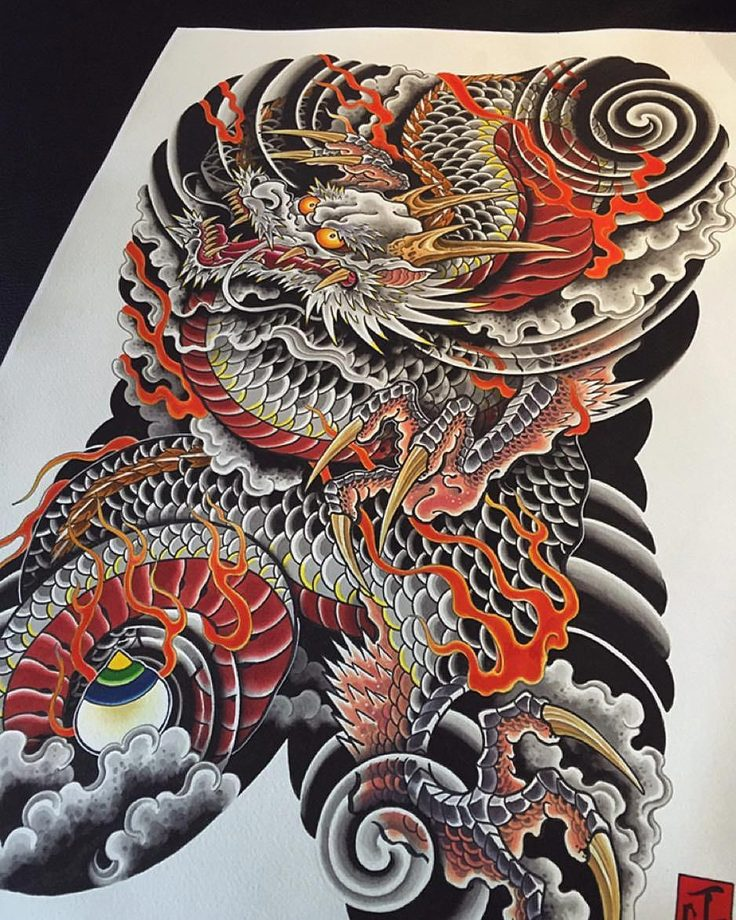

И сегодня речь пойдет о японском стиле!!!
Расскажем об истории развития
традиционного стиля японской татуировки
с древних времен до наших дней.
Сегодня традиционные японские мотивы, дизайны и стилистические решения остаются популярными
источниками вдохновения для многих современных мастеров.
Зачастую многие художники предпочитают комбинировать старые мотивы с новыми,
но вне зависимости от этих изменений японские татуировки имеют одну общую
черту — корни
«ирэдзуми» (традиционные японские татуировки).
Развитие японского искусства татуировки можно разделить на столетия. Самый ранний признак феномена украшения кожи рисунками можно встретить на татуированных лицах глиняных фигурок. Ещё одно упоминание об этом древнем искусстве обнаружено в Вэй Чжи, китайской хронике III века. Её текст показывает, что в то время «мужчины молодые и старые татуировали лица и украшали свои тела рисунками». Однако в VII веке эта форма искусства сбросила свои обороты. Татуировки использовались как форма наказания для заключенных, куртизанок и преступников. Такая практика в конечном итоге продлилась более 1000 лет.
Японская татуировка

Пример эскиза японской татуировки
Но уже в XVIII веке японские татуировки подверглись еще одной трансформации. Из-за преобладания красочной и живописной стилистики, они стали популярными среди групп населения низкого социального статуса, таких как рабочие, крестьяне и даже банды. Учитывая его связи с низшим классом, а также долгую и сомнительную историю, ирэдзуми в конечном итоге был объявлен вне закона в Японии, хотя мастера всё еще могли юридически татуировать иностранцев. В XIX веке, когда художники начали татуировать иностранных моряков, искусство японской татуировки стало известно всему миру. Несмотря на то, что это было незаконно для жителей Японии, японская татуировка приобрела глобальную известность за её пределами.
Карп Кои– один из наиболее популярных мотивов японских татуировок. Карпов выбирают те, кто хочет добиться успеха.
Мотивы с тигром означают мужество, бесстрашие и силу. Изображение тигра служит защитой от злых духов и болезней.
Драконы символизируют мудрость и щедрость. Вообще дракон – очень популярное изображение в современной Японии. Японцы верят, что это существо привлекает везение к обладателю татуировки.
ПОДБОР ТЕМАТИЧЕСКИХ КАРТИНОКТак же всегда рады новым клиентам, приходите в гости в нашу прекрасную студию художественной татуировки, за порцией красоты